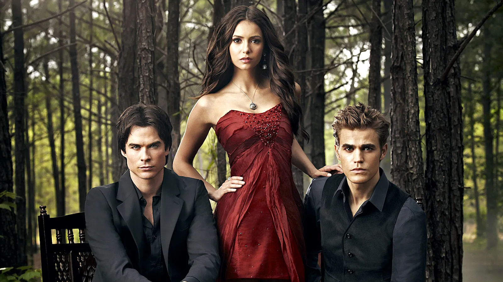
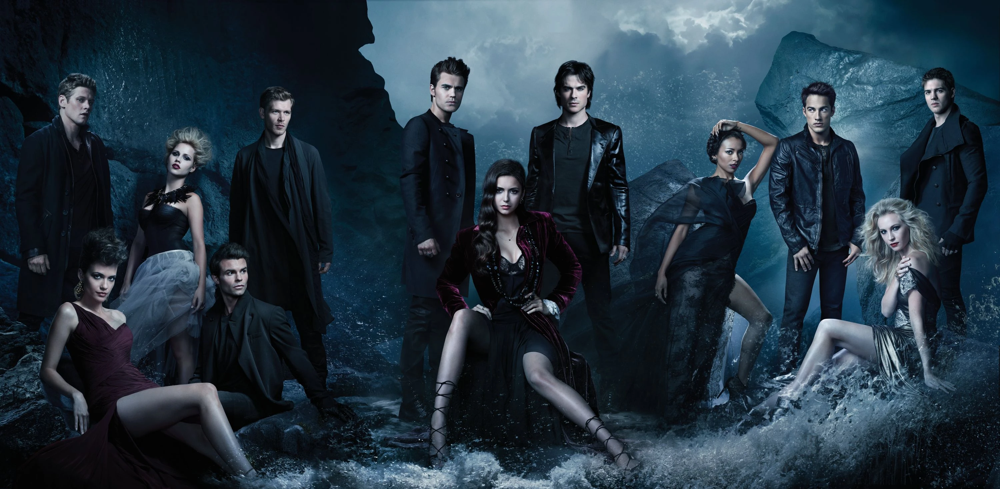

The Vampire Diaries is an American supernatural teen drama television series developed by Kevin Williamson and Julie Plec, based on the book series of the same name written by L. J. Smith. The series premiered on the CW on September 10, 2009, and concluded on March 10, 2017, having aired 171 episodes over eight seasons.

The series is set in the fictional town of Mystic Falls, Virginia, a town charged with supernatural history. It follows the life of Elena Gilbert, a teenage girl who has just lost both parents in a car crash, as she falls in love with a 162-year-old vampire named Stefan Salvatore, who she thinks is just a normal human. Their relationship becomes increasingly intricate as Stefan's mysterious older brother Damon Salvatore returns to Mystic Falls with a plan to bring back their past love, Katherine Pierce, who is Elena's doppelgänger.
Although Damon initially holds a grudge against his brother for forcing him to become a vampire, he later reconciles with Stefan, but their relationship is challenged when they both fall in love with Elena, creating a love triangle among the three. Both brothers attempt to protect Elena as they face various villains and threats to their town, including Katherine, while trying to protect their identity as vampires. Throughout the series, the Salvatore brothers' pasts and the town's history is slowly revealed through flashbacks. At the heart of the series, the principal characters embody a rare combination of emotional depth and narrative purpose. Their evolving relationships and individual transformations give the story its enduring resonance.

Additional storylines revolve around the other inhabitants of the town, most notably Elena's younger brother Jeremy Gilbert and aunt Jenna Sommers, her best friends Bonnie Bennett and Caroline Forbes, their mutual friends Matt Donovan and Tyler Lockwood, Matt's older sister Vicki Donovan, and their history teacher and vampire hunter Alaric Saltzman. The town's politics are orchestrated by the Founders' council, comprising descendants of the founding families: the Fells, the Forbes, the Lockwoods, the Gilberts, and the Salvatores. They guard the town mainly from vampires and other supernatural threats such as werewolves, witches, hybrids (cross-breeds of two or more different supernatural beings), and ghosts. One of the reasons *The Vampire Diaries* stayed addictive for eight seasons is how rich the side characters and villains were.
Initially, Kevin Williamson had little interest in developing the series, as he found the premise too similar to the Twilight novels. However, at the urging of Julie Plec, he began to read the books. He started to become intrigued by the story: "I began to realize that it was a story about a small town, about that town's underbelly and about what lurks under the surface." Williamson has stated the town's story will be the main focus of the series rather than high school.
The Vampire Diaries became one of the most defining teen dramas of the 2010s because it hit the perfect mix of romance, mythology, and character-driven storytelling. It arrived during the height of the vampire craze but quickly separated itself from the trend by building a fast-paced narrative, deep emotional arcs, and a world that kept expanding without losing its core relationships. Its success revived The CW as a network, and set the blueprint for supernatural TV aimed at young adults. Beyond ratings, the show shaped internet fandom culture — Tumblr edits, ship wars, weekly theories — and created iconic characters like Damon, Stefan, and Elena who still circulate in pop culture today. Its mix of melodrama, mystery, and unapologetic chaos influenced a whole generation of supernatural shows, proving that genre TV can thrive when it leans into emotion and world-building at the same time.